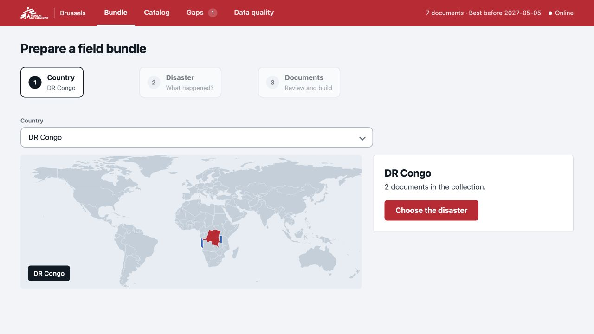
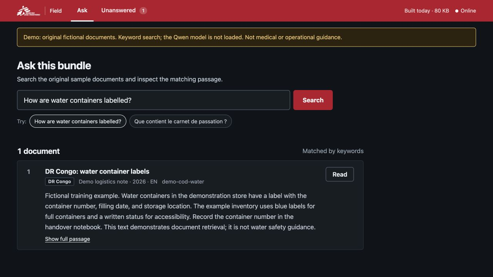

Prepare in Brussels.
Search in the field.
The right documents should travel with the team—even when the internet cannot.
Response Bundle packs a country’s documents into one portable file. A field laptop searches it locally and shows the exact passage, its source, year and language.
Built in 4 hours · Best Overall, Data 4 Good Challenge
Leuven, 28 October 2026 · MSF challenge
Transfer one file by USB or another available link.
Model weights are cached separately on the laptop.
When retrieval evidence is weak, the system can refuse the question instead of generating an answer. Its refusal rule is imperfect.
A document collection is only useful
if the team can reach it.
The challenge was to help humanitarian teams find information with intermittent connectivity, limited resources and documents in English, French, Spanish and Arabic.
We put the expensive preparation in the office. The field gets a focused collection, a local search interface and visible sources. Retrieval shows original source text for the reader to assess.
Brussels prepares the collection.
Choose the country. Review the coverage. Build the bundle.


See the coverage. A country map and searchable catalog make the collection’s scope visible.
Choose what travels. Filter by crisis type, review sources and untick documents the team does not need.
Export once. Download a SQLite bundle containing text, metadata, vectors and a keyword index. Export copies existing vectors.
What is actually inside the bundle?
Document metadata, crisis tags, passages, 256-dimensional float32 vectors and an SQLite FTS5 index. The source text is included; original PDF and HTML files and the Qwen model weights are separate. Reading passages works without the original files.
The field searches what it has.
Ask a question. Read the passage. Check the source.


The source stays visible.
Results are document passages, not a model-written answer. Each carries its title, year and language so the reader can assess what it says and how old it is.
A refusal is a result, too.
If both retrieval signals are weak, the app says “Not in this collection.” Unanswered questions are logged locally. Teams must transfer the gap log to Brussels; there is no automatic synchronization.
Do the heavy work once.
Carry the useful part.
One pipeline, one portable database, two small interfaces.
Prepare
Clean text, remove duplicates, split passages and tag the documents. Embed passages with Qwen3-Embedding-0.6B, truncated to 256 dimensions.
pipeline/Package
Store passages, sources, vectors and the FTS5 index in SQLite. Copy selected country and global documents into a smaller bundle.
country.sqliteRetrieve
Embed the question, score semantic similarity, find keyword matches, apply the refusal rule and combine rankings using reciprocal rank fusion.
search/ + app/
Local inference. Qwen runs on the laptop. Once dependencies and weights are cached, searching needs no internet connection.
A deliberate tradeoff. The float32 search process needs about 4 GB of RAM. The bundle is portable; the complete runtime is larger.
No per-question API bill. Inference uses an open model. Hardware, setup, maintenance and data preparation still have costs.
How does the refusal rule work?
The best cosine similarity must be below T_vec and keyword coverage below T_kw to refuse. The evaluation bundle uses T_vec = 0.645 and T_kw = 1.01; keyword matches alone therefore cannot override a refusal. These values were tuned on the challenge collection and are not universal safety thresholds.
Promising on a small test.
Still a prototype.
43 questions in four languages: 22 for tuning, 21 held out.
| Held-out measure | Hybrid search | Keyword baseline |
|---|---|---|
| Expected document found in top 5 | 9 / 9answerable questions | 8 / 9 |
| Unanswerable questions correctly refused | 9 / 123 questions still received results | 4 / 12 |
Three unsupported questions still received results. This small test uses the challenge collection and does not establish clinical safety. The sample documents demonstrate the workflow; the challenge dataset is not included.
What we would improve next
- Test more questions, especially cross-language questions and plausible but unsupported requests.
- Reduce false positives and validate refusal thresholds on new collections.
- Improve country tagging and selection of global documents.
- Evaluate lower-memory inference and test on field hardware.
Take a closer look.
The source includes the pipeline, both interfaces, evaluation code and original fictional sample documents. You can run the sample without the challenge dataset or a model download.
The default sample demonstrates the workflow with keyword search. An optional semantic build uses the full Qwen retrieval path.
Explore the repositoryuv sync --frozen
uv run python -m pipeline.demo
uv run python app/server.py \
--bundle bundles/demo.sqliteThen open http://127.0.0.1:8000.
See the README for the country bundle and semantic setup.